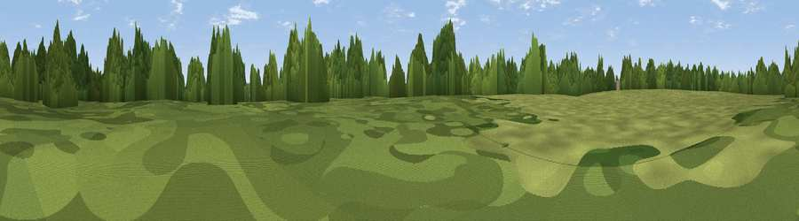

Pauncefoot Hill
#42496 in England · top 78% of its area beats it · near RomseyWhere it is
The exact computed spot (SU 34223 19291). Click the marker for map links.
The view, rendered

A 360° render of this exact spot computed from the terrain model, tree cover and land cover — summer colours, afternoon light, calibrated against photographs of famous viewpoints. Real trees, hedges and buildings will differ in detail.
The panorama
Grey silhouette: terrain skyline in each direction (720 bearings, Earth curvature and refraction included). Dashed green: skyline with trees (+15 m) and buildings (+8 m) as obstacles. Blue strip: how far the ground is visible on each bearing.
Where the view opens
Wedge length = distance to the farthest visible ground on that bearing (vegetation-aware). Rings at 10, 25 and 50 km.
What fills the view
44% grassland · 42% woodland · 11% cropland · 3% built-up
Angular shares of the visible panorama (visual magnitude), not map area. Landscape diversity 0.48 (0–1 Shannon).
Key numbers
More beautiful places nearby
The staircase of upgrades: each row has a higher view potential than everything closer. Driving times are estimates from straight-line distance, calibrated against real road routing — check an actual route before setting out.
| Place | Direction | Drive | Score |
|---|---|---|---|
| Green Hill | N · 1 km | ~4 min | 30.0 |
| Viewpoint near Sherfield English | NW · 4 km | ~9 min | 36.8 |
| Viewpoint near Upton | E · 4 km | ~9 min | 46.3 |
| Viewpoint near Bramshaw | WSW · 9 km | ~17 min | 46.6 |
| Viewpoint near West Dean | NW · 10 km | ~20 min | 53.1 |
| Viewpoint near West Dean | NW · 11 km | ~20 min | 57.9 |
| Viewpoint near King's Somborne | NNE · 11 km | ~21 min | 61.3 |
| Viewpoint near Sparsholt | NNE · 11 km | ~22 min | 66.9 |
50.97202, -1.51396 · source: osm peak · position refined by local search. Computed location — check access rights before visiting.